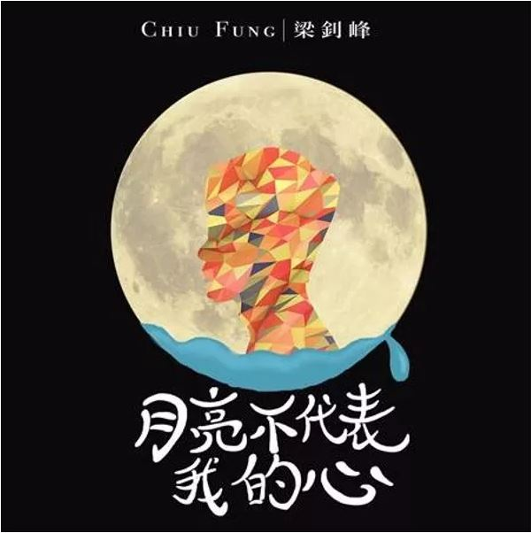

月亮代表不尽所有无聊人的心，更多人唱是痛爱。
2010年，四子以C AllStar的成员身份加入了香港乐坛，在七年的活跃期中，也获得了大大小小很多的奖项，包括叱咤乐坛生力军金奖、十大中文金曲、叱咤十大、CASH最佳歌曲、叱咤乐坛组合金奖以及叱咤乐坛我最喜爱的组合。
然而 最终敌不过七年魔咒，在2017年的10月，于红磡体育馆举行完两场红馆演唱会后，宣布正式休团，成员作个人发展。
而在四子中最快开始以歌手身份，重新再出发的成员是Chiufung 梁钊峰。早前也发现他已经率先在FB专页作出改名，由原有的梁钊峰 C AllStar 改成更具个人味道的 ChiuFung 梁钊峰，也引来部分歌迷的猜测，是否是准备出个人单曲了。
适逢Wyman生日之际在IG预告，嚟紧会为钊峰写上一首《月亮不代表我的心》，并提早预告作曲为Eric Kwok。
而 不久之后，寰亚也开始有宣传，四子会有一位先开始solo派歌。虽然吧主同期也收到On仔拍摄MV的消息，但因没有披露歌曲班底，而更倾向是钊峰首先派台。
而在六月，也正式收到钊峰的这首派台，正是黄伟文与Eric Kwok联手打造的这首《月亮不代表我的心》，编曲方面还请到林知秋负责。这首也是继Loveholic - Vol.2的《别消失》后，另一首由 钊峰 Solo派台的作品。
虽然C AllStar的活跃阶段要暂时告一段落，但四子的音乐生涯不会停。祝愿四子能继续开拓自己的音乐理想，在自己想拓展的范围再进一步。
℗ 寰亚
曲：Eric Kwok
词：黄伟文
编：林知秋
制： Eric Kwok


既然如此，盖个楼哇
好喜欢这首歌啊~~~